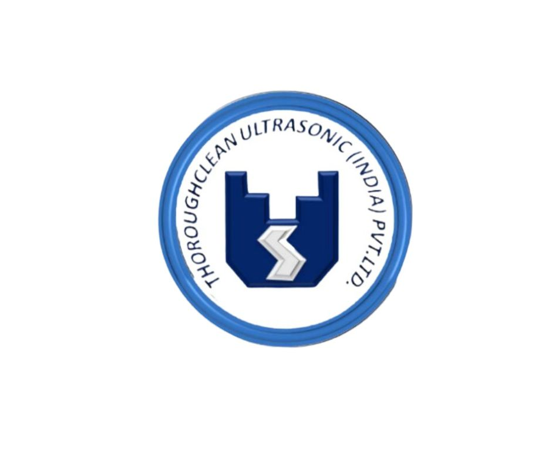

ThoroughcleanEstablished in 1995, Thoroughclean Ultrasonic (India) Pvt. Ltd. is a trusted name in the field of industrial ultrasonic cleaning systems. Headquartered in Delhi, we specialize in designing, manufacturing, and supplying advanced ultrasonic cleaning equipment tailored to meet the needs of industries such as aerospace, biomedical, electronics, automotive, and precision engineering. Our product line includes single- and multi-tank ultrasonic cleaners, spray washers, vapor degreasers, drying systems, and fully automated conveyorised units. With a strong focus on quality, innovation, and after-sales support, we offer complete in-house capabilities for design, assembly, and process integration. Backed by decades of engineering expertise and a commitment to integrity and customer satisfaction, Thoroughclean has delivered over 6,000 installations across India, setting industry benchmarks in efficiency and reliability.
Thoroughclean Ultrasonic (India) Pvt. Ltd. is guided by the experienced leadership of Mr. Jitendra V. Thakkar and Mr. Prateek J. Thakkar, who bring a perfect blend of vision, technical expertise, and commitment to innovation. Mr. Jitendra Thakkar, the founding director, has decades of hands-on experience in industrial automation and ultrasonic technology, laying the foundation for the company’s high standards of quality and engineering excellence. His strategic mindset and deep industry knowledge have positioned Thoroughclean as a pioneer in its domain. Supporting this legacy, Mr. Prateek Thakkar brings modern thinking and a customer-centric approach, driving innovation, operational efficiency, and digital integration across the company’s offerings. Together, their leadership ensures that Thoroughclean remains a reliable partner for precision cleaning solutions across India.
To be India’s most trusted and innovative provider of ultrasonic cleaning solutions, empowering industries with precision, sustainability, and efficiency. We aim to set new benchmarks in engineering excellence and customer satisfaction, while continuously evolving through technology, quality, and integrity.
+91 9810065675
Mon – Sat 10.00 am – 6.00 pm